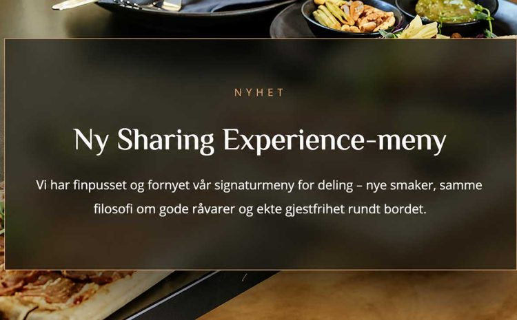
Vi har finpusset og fornyet vår signaturmeny for deling – nye smaker, samme filosofi om gode råvarer og ekte gjestfrihet rundt bordet.
Les mer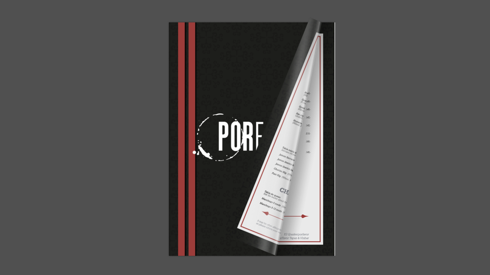
Hos Por Favor Tapas & Vinbar handler alt om autentiske smaker, gode råvarer og hyggelige opplevelser rundt bordet.
Les mer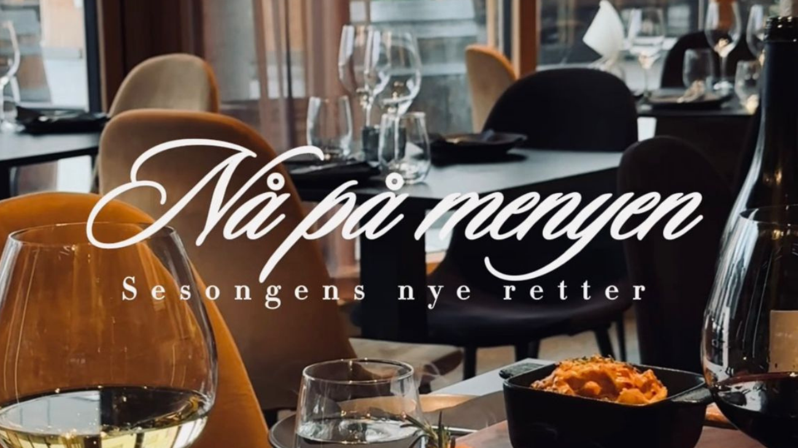
Vi har gleden av å presentere flere nye retter på menyen, inspirert av sesongens beste råvarer og våre spanske tradisjoner.
Les mer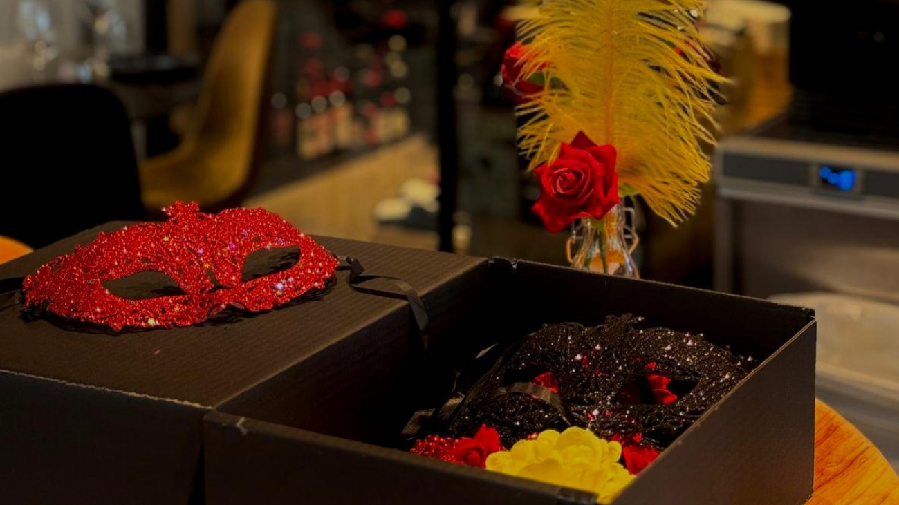
A Spanish Ritual of Fire & Flavor — a Paella Meat Feast, flowing wine, rising tempo.
Les mer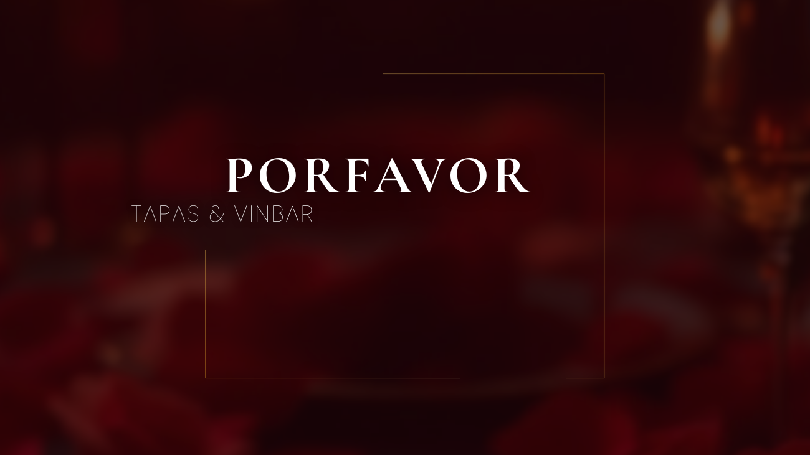
Este 14 de febrero, enamórate despacio. Our Valentine's Day menu is designed to make time stand still at the table.
Les mer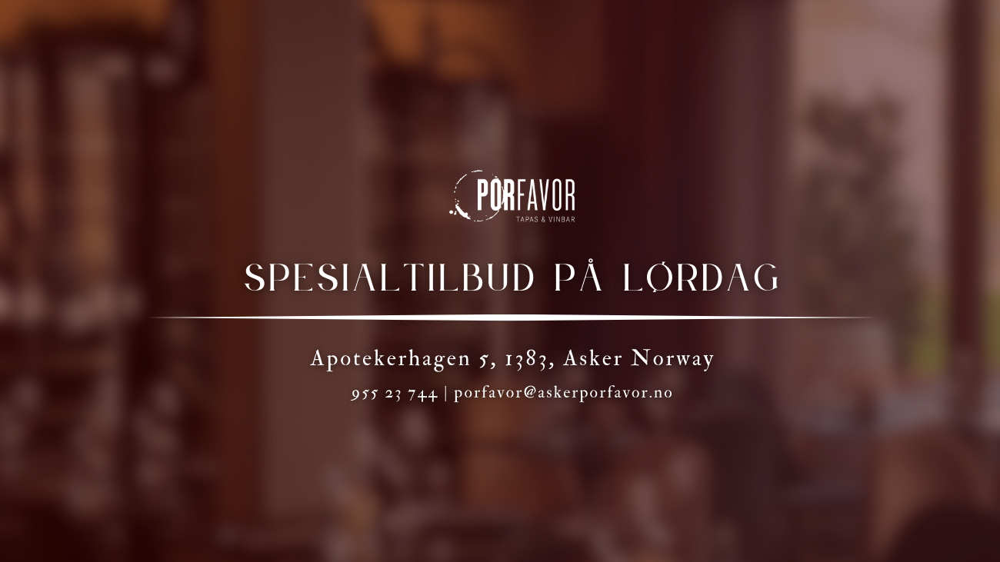
Ukens spesialtilbud på lørdag hos Por Favor.
Les merAfter Work hos Por Favor Tapas & Vinbar.
Les merNy ukens tapa hos PorFavor! Fuet-tartar på briochebrød.
Les mer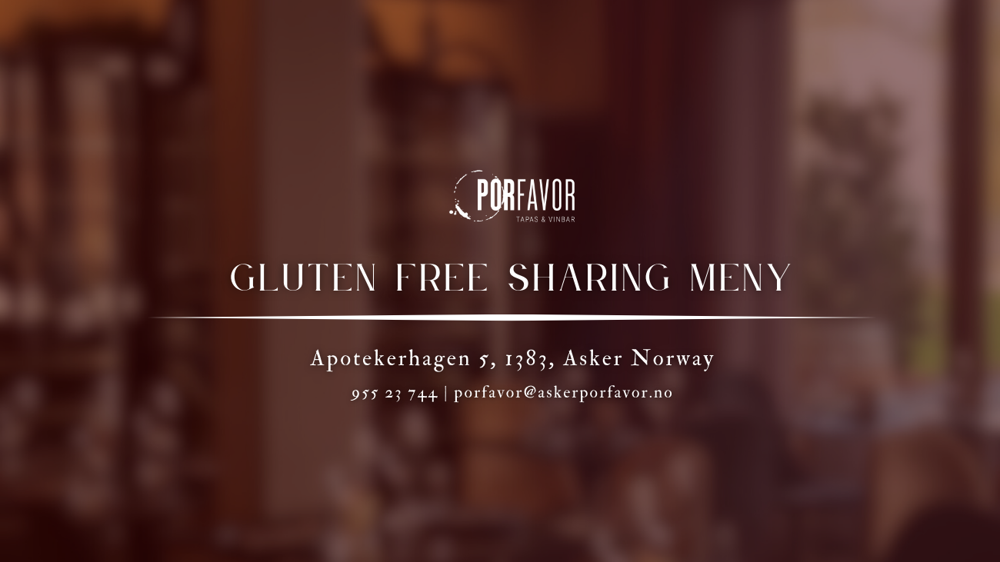
Gluten Free Sharing Meny — 649 KR p.p uten dessert, 679 KR p.p med dessert.
Les mer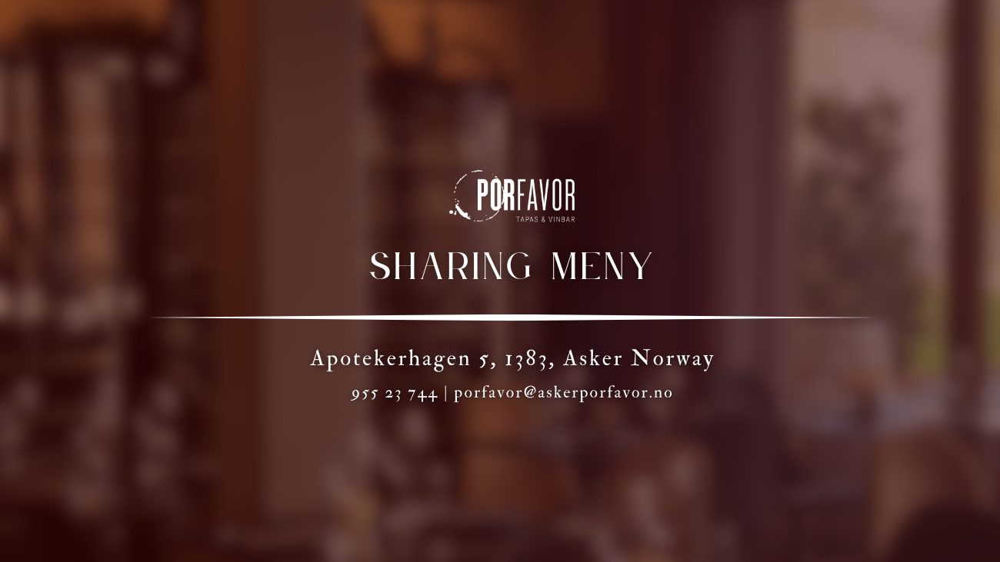
Sharing Meny — 649 KR p.p uten dessert, 679 KR p.p med dessert.
Les mer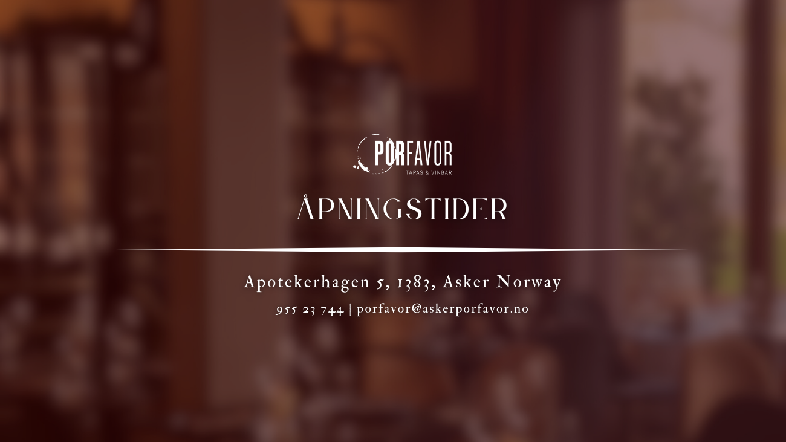
Søndag til Torsdag: 16:30–22:00. Fredag: 14:00–00:00. Lørdag: 12:00–00:00.
Les mer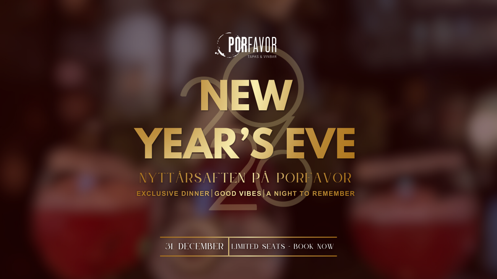
Exclusive Dinner │ Good Vibes │ A Night to Remember — 31. desember, book nå.
Les mer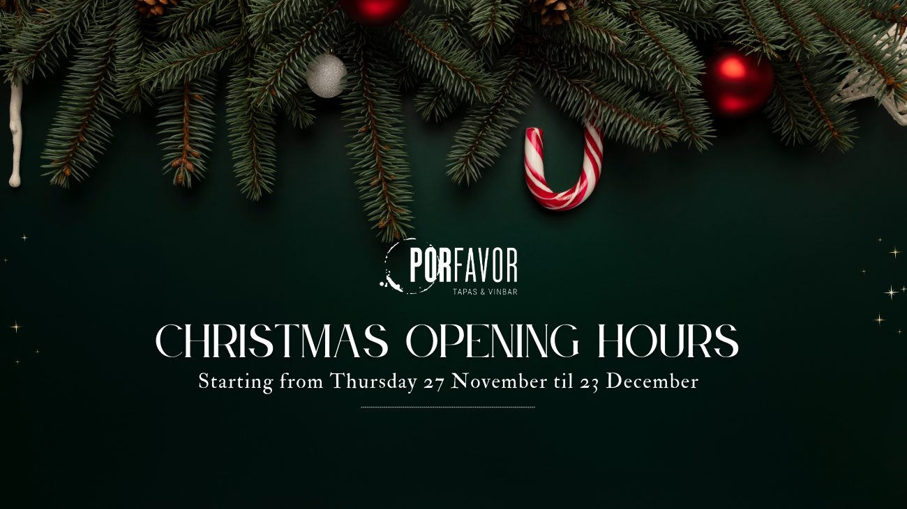
Starting from Thursday 27 November til 23 December — see the holiday opening hours.
Les mer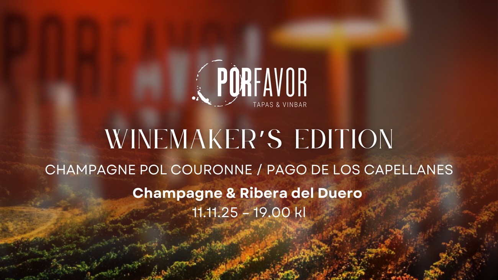
En helt spesiell Winemakers Dinner med Champagne Pol Couronne / Pago de los Capellanes.
Les mer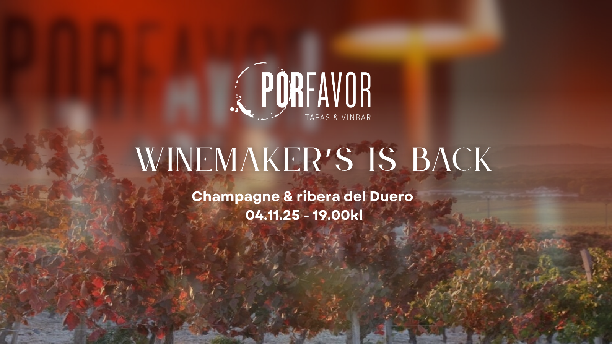
En helt spesiell og unik Winemakers Dinner med 3 vinprodusenter fra Frankrike Champagne og Spania Ribera del Duero.
Les mer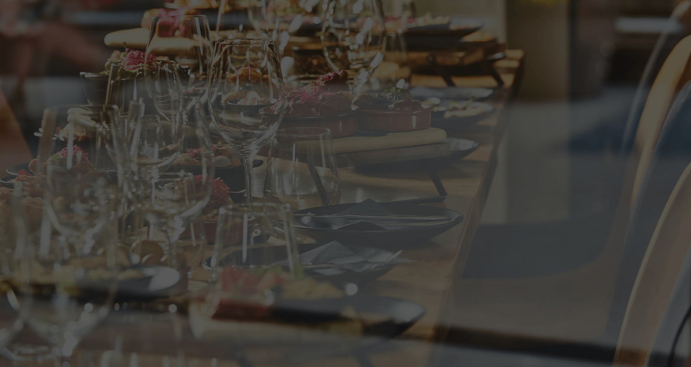
Restauranten PorFavor vil holde stengt mandag 01.09.2025 på grunn av oppussing.
Les mer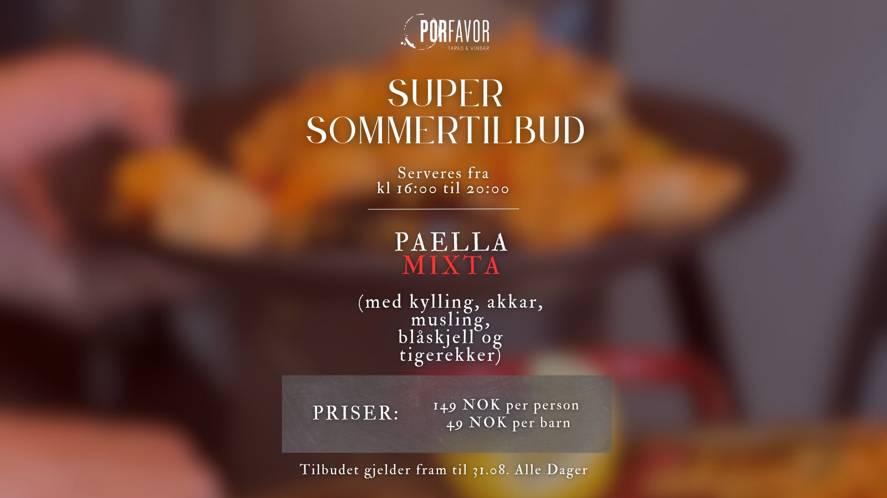
Vår Paella Mixta: saftig kylling, fersk akkar, muslinger, blåskjell og store tigereker. Fra 16:00 til 20:00, hele sommeren.
Les mer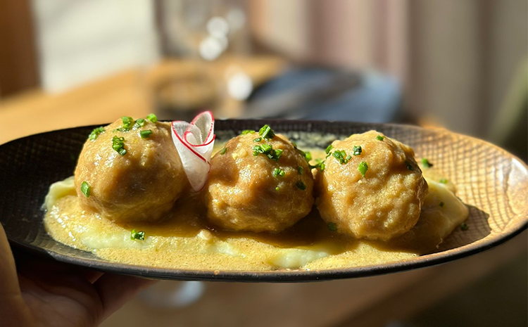
Saftige kyllingkjøttboller med kremet sennepssaus og potetmos. Tilgjengelig for kun 139,-.
Les mer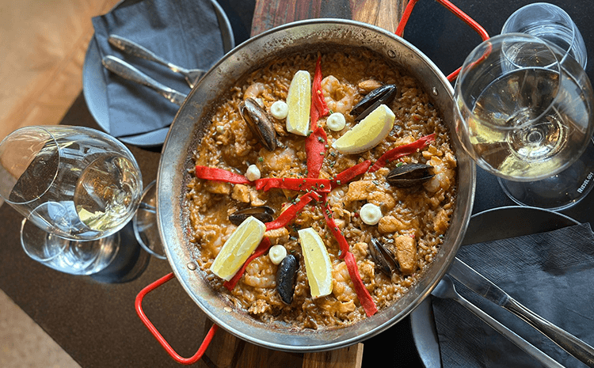
Vi tilbyr et bredt utvalg av paellaer som tilpasser seg alle smaker og preferanser.
Les mer